1과목: 수처리공정
1. 폭기처리의 효과로 볼 수 없는 것은?
2. 여과지 하부집수장치 채택 시 고려하여야 할 사항으로 옳지 않은 것은?
3. 급속여과법에 비해 완속여과법을 적용하고자 하는 경우로 옳은 것은?
4. 정수지에 관한 설명으로 옳은 것은?
5. 오존처리에 관한 설명으로 옳지 않은 것은?
6. 유입 슬러지량이 1,000 m3/day이고, 농축 슬러지량이 250 m3/day일 때, 농축조에서 청징조건을 만족하는 면적(m2)은? (단, 등속침강구간에서의 계면침강속도는 0.2 m/day이다.)
7. 막여과시설 중 2가 양이온 또는 저분자량(용해성유기물) 물질을 제거하기 위한 막여과법은?
8. 막여과 시설에서 처리대상물질에 따른 전처리 설비 선정이 옳지 않은 것은?
9. 유량 10,000 m3/day에 염소를 주입하고자 한다. 염소주입농도가 3 mg/L일 때, 유효염소 10 %를 함유하는 차아염소산나트륨의 용적주입량(L/day)은? (단, 차아염소산나트륨의 비중은 1.2이다.)
10. 처리대상물질과 전염소 또는 중간염소처리 간의 연결로 옳지 않은 것은?
11. 슬러지 침강ㆍ농축ㆍ탈수성에 관한 설명으로 옳은 것은?
12. 처리대상물질과 처리방식 간의 연결로 옳지 않은 것은?
13. 막세척에 사용되는 약품 중 유기물 제거가 가능한 것은?
14. 입상활성탄 흡착설비의 설계인자에 관한 설명으로 옳은 것은?
15. 슬러지량이 24,000 kg-DS/day이고 여과속도(여과농도)가 25 kg/m2ㆍhr일 때, 가압 탈수기의 여과면적(m2) 및 소요대수는? (단, 탈수기 실가동 시간은 8 hr/day이고, 대당 여과면적은 30 m2이다.)
16. 침전공정 관리에 관한 설명으로 옳지 않은 것은?
17. 유량이 32,000 m3/day이고 지름이 40 m인 원형침전지의 표면부하율(m3/m2ㆍday)은?
18. 응집약품 저장설비용량에 관한 설명으로 옳지 않은 것은?
19. 급속여과지에 요구되는 주요 기능으로 옳은 것을 모두 고른 것은?
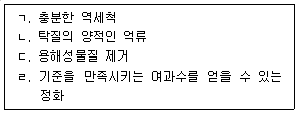
20. 역세척방식 설계시 여과층내 탁질의 억류상태에 영향을 미치는 인자로 옳은 것을 모두 고른 것은?
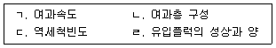
2과목: 수질분석 및 관리
21. 먹는물 수질기준 및 검사 등에 관한 규칙상 먹는물의 수질기준으로 옳지 않은 것은?
22. 정수처리공정에서 자외선반응조 설계시 고려해야 할 사항으로 옳지 않은 것은?
23. 수질오염공정시험기준상 용어에 관한 설명으로 옳은 것은?
24. 수도법령상 50,000 m3/일 이상 100,000 m3/일 미만 시설규모의 일반수도사업자가 배치하여야 하는 2급 정수시설운영관리사의 인원기준은?
25. 수도법령상 지표수를 사용하는 일반수도사업자가 준수해야 할 정수처리기준 중 취수지점부터 정수장의 정수지 유출지점까지의 구간에서 지아디아 포낭(胞囊)의 제거 혹은 불활성화 기준은?
26. 먹는물수질공정시험기준상 총대장균군 시험방법으로 옳지 않은 것은?
27. 다음은 먹는물관리법상 용어의 정의이다. ( )에 알맞은 용어는?
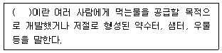
28. 먹는물수질공정시험기준상 수소이온농도-유리전극법에 관한 설명으로 옳은 것을 모두 고른 것은?
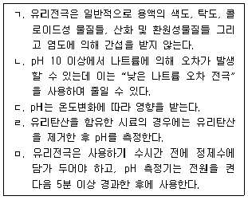
29. 막여과정수시설 설치시 옳지 않은 것은?
30. 상수원관리규칙상 광역 및 지방상수도의 하천수 수질검사기준 중 매월 1회 이상 측정하는 항목으로 옳지 않은 것은?
31. 111 g/L Ca(OH)2 수용액의 노르말농도(N)는? (단, Ca, O, H의 원자량은 각각 40, 16, 1이며, Ca(OH)2는 수용액상에서 완전 해리되는 것으로 가정한다.)
32. 먹는물 수질감시항목 운영 등에 관한 고시상 먹는물 수질감시항목과 시험방법을 연결한 것 중 옳은 것을 모두 고른 것은?
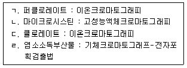
33. 수질오염공정시험기준상 시료의 보존방법 중 4℃ 보관하였을 때, 최대보존기간이 가장 짧은 항목은?
34. 각종 소독제를 이용하여 5 ℃일 때에 E. coli를 99 % 불활성화하기 위한 소독능(CㆍT값)으로 옳지 않은 것은?
35. 수질오염공정시험기준상 상수원수에서 분원성대장균군을 막여과법으로 검출하여 아래 표와 같은 결과를 얻었다. 해당 상수원수에서 검출된 분원성대장균군수(분원성대장균군수/100 mL)로 옳은 것은?
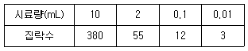
36. 물환경보전법령상 다음은 수질오염감시경보의 어느 단계에 해당하는가?
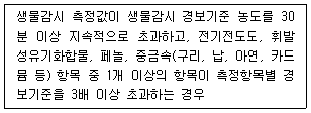
37. 정수처리 공정에서 트리할로메탄(THM) 등의 소독부산물을 감소시키기 위한 수질관리 방안으로 옳지 않은 것은?
38. 고도정수처리시설 도입 및 평가지침상 일반정수처리방법으로는 완전히 제거되지 않는 수돗물의 맛ㆍ냄새 유발물질, 미량유기오염물질, 내염소성 병원성 미생물 등 을 제거하기 위한 고도정수처리시설의 도입 및 평가에 필요한 처리수의 수질검사 항목으로 옳지 않은 것은?
39. 염소요구량에 관한 내용으로 옳은 것은?
40. 먹는물 수질기준 및 검사 등에 관한 규칙상 염지하수에 대하여 방사능 관련 검사 시행 시 측정해야 하는 항목으로 옳은 것을 모두 고른 것은?
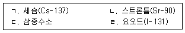
3과목: 설비운영(기계·장치 또는 계측기 등)
41. 수류식혼화의 특징이 아닌 것은?
42. 응집용 약품주입설비의 운영에 관한 내용으로 옳은 것을 모두 고른 것은?
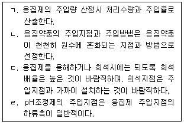
43. 정수장 장방형 침전지에 사용되는 슬러지 수집기 형식이 아닌 것은?
44. 정수공급설비인 펌프의 유지관리와 관련하여 일상점검 항목이 아닌 것은?
45. 수도사업장에는 펌프의 이용목적에 따라 다양한 형식의 펌프가 적용된다. 수도용 송수ㆍ가압 목적으로 주로 사용하지 않는 펌프는?
46. 가압탈수기에 관한 내용으로 옳은 것은?
47. 정수시설에 사용되는 밸브 용도와 종류의 연결이 옳지 않은 것은?
48. 상수도설계기준상 소독설비의 안전성을 확보하기 위한 목적으로 저장실과 주입기실 등에 설치하는 것은?
49. 저항 R1, R2, R3가 직ㆍ병렬로 연결된 회로에 18 V의 전원을 연결하였다. 저항 R3의 전압강하 V3(V)전류 I3(A)는?
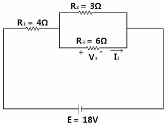
50. 상수도설계기준상 펌프를 자동 또는 원격제어에 의하여 운전하는 경우에 유수검지 장치를 설치하는 목적은?
51. 수ㆍ변전설비 설계과정에서 가장 먼저 이루어져야 하는 것은?
52. 직류전동기의 종류와 특성에 관한 설명으로 옳지 않은 것은?
53. 계측제어용 기기의 구성 중 상수도시설의 각 부분에서 수위, 압력, 수량 및 수질 등의 변화량을 검출하여 신호로 변환하는 장치는?
54. 상수도설계기준상 수ㆍ변전설비에 관한 설명으로 옳은 것은?
55. 염소제의 주입지점이 침전지와 여과지 사이에서 주입하는 염소주입방식은?
56. 상수도설계기준상 ( )에 들어갈 용어로 옳은 것은?
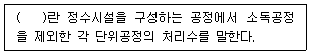
57. 다음은 상수도설계기준상 활성탄 처리방식에 관한 설명이다. ( )에 들어갈 용어로 옳은 것은?
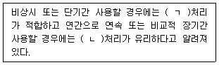
58. 오존 접촉지에 관한 설명으로 옳지 않은 것은?
59. 급속여과지의 하부집수장치에서 물역세척(수세식) 방식으로만 짝지어진 것은?
60. 산업안전보건법령상 안전보건관리책임자 등에 대한 직무교육에 관한 내용이다. ( )에 들어갈 숫자로 옳은 것은?
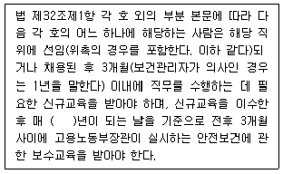
4과목: 정수시설 수리학
61. [MLT]계로 표현한 물리량에 관한 차원 표시로 옳지 않은 것은? (단, [M]은 질량, [L]은 길이, [T]는 시간을 표시하는 차원이다.)
62. 어떤 물체의 공기 중 무게는 10 kgf이고, 수중 무게는 5 kgf이다. 이 물체의 부피(m3)는? (단, 물의 단위중량은 1,000 kgf/m3이다.)
63. 관수로의 마찰손실 및 마찰손실계수에 관한 설명으로 옳지 않은 것은?
64. A지역 상수도관이 파손되어 물이 대기 중으로 40 m/sec의 속도로 분출되고 있다. 이 때 관 내 수압(kgf/cm2)은 약 얼마인가? (단, 모든 손실은 무시하고 물의 단위 중량은 1,000 kgf/m3, 중력가속도는 9.8 m/sec2이다.)
65. 개수로에서 유량측정을 목적으로 사용할 수 있는 것을 모두 고른 것은?
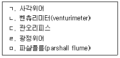
66. 유체의 유동가시화(flow visualization)에 관한 설명으로 옳지 않은 것은?
67. 수조의 측벽에 설치된 오리피스의 수축계수는 0.7, 유속계수는 0.8인 경우, 이 오리피스의 유량계수는?
68. Hardy-Cross 관망해석법의 기본가정에 관한 설명으로 옳은 것은?
69. 관수로 흐름에서 마찰손실의 원인이 되는 물의 성질은?
70. A지역에 위치한 개수로의 유량을 Manning 공식으로 구했더니 2 m3/sec였다. 다른 조건은 동일하고 수로의 경사만 4배로 증가시켰을 경우, 개수로에 흐르는 유량(m3/sec)은? (단, 수로에서 발생하는 흐름은 등류이다.)
71. 폭이 2 m인 직사각형 단면 수로에 유량 2 m3/sec이 흐르고 있다. 이 경우 최소의 비에너지(m)는 약 얼마인가? (단, 에너지보정계수는 1.0이고 중력가속도는 9.8 m/sec2이다.)
72. ( )에 들어갈 내용으로 옳은 것은?
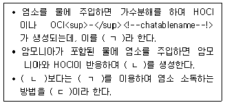
73. 수위차가 2 m인 2개의 수조를 직경 0.4 m, 길이 200 m의 직선관으로 연결하였을 경우, 관내 유속(m/s)은 약 얼마인가? (단, 중력가속도는 9.8 m/sec2, 관의 마찰손실계수는 0.025, 유입손실계수는 0.5, 출구손실계수는 1.0이며 다른 손실은 없다.)
74. 장방형 침전지를 이용하여 9,600 m3/day의 유량을 정수처리 하고자 한다. 물 속에 포함된 침전입자의 침강속도가 1.0 m/hr인 경우, 입자의 완전제거를 위한 침전지의 표면적(m2)은? (단, 침전입자는 Stokes 법칙이 성립하는 제1형침전(독립침전)을 따른다.)
75. 여재층의 두께와 평균투수계수가 각각 0.6 m와 60 m/day인 일방향 여과지를 이용하여 12,000 m3/day의 유량을 정수처리 하고자 한다. 여재를 통과하기 전과 후의 수두차가 1.2 m로 일정하게 유지될 경우, 여과지의 소요면적(m2)은?
76. A정수장과 B배수지의 수면표고는 각각 30 m와 50 m이고 정수장에서 배수지로 86,400 m3/day의 유량을 송수하고자 한다. 송수과정에서 발생하는 에너지손실이 10 m이고 펌프의 효율이 70 %인 경우, 소요동력(kW)은? (단, 물의 단위중량은 1,000 kgf/m3이고 중력가속도는 9.8 m/sec2이다.)
77. 펌프의 급정지, 급가동 또는 밸브의 급폐쇄로 인해 관로 내 흐름의 운동에너지가 압력에너지로 변환되어 관벽에 충격을 주는 현상은?
78. 취수장에서 펌프 1대를 운용하다가 동일 용량의 펌프 1대를 추가하여 2대를 병렬로 연결하였을 때, 다음 설명으로 옳은 것은?
79. 펌프의 특성곡선에 관한 설명으로 옳지 않은 것은?
80. 펌프의 비교회전도(비속도)에 관한 설명으로 옳지 않은 것은?